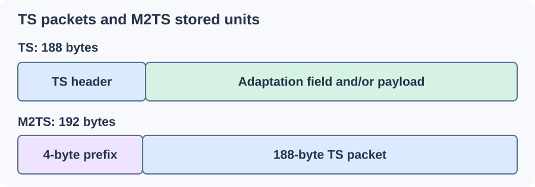

MPEG Transport Stream: TS and M2TS
A receiver can join a television transmission after it has already started. MPEG transport stream (TS) gives it repeated descriptions and small identifiable packets so it can find the wanted components in that ongoing sequence.
Every basic TS packet occupies 188 bytes. A minimum four-byte header includes synchronization, a PID identifying the packet's role, and control fields describing its payload and continuity. An optional adaptation field can carry additional timing or signalling; the remaining space carries payload.

Stored framing schematic. Widths do not represent byte proportions.
Find the boundaries, then find the programme
A reader looks for the synchronization pattern at the expected packet spacing and validates the packet structure. One apparent matching byte in arbitrary data is less useful than a sequence consistent with the format.
The PID identifies a component locally within the multiplex. PAT and PMT give those identifiers meaning: the PAT points to a programme's PMT, and the PMT identifies its video, audio, subtitles, and programme clock reference. Several programmes can share one transport sequence.
Selecting one service follows the PIDs described for that programme. It does not mean that every packet in the file is part of the selected presentation. A complete multiplex recording can include other services or signalling as well.
A picture can span many packets
Media is commonly wrapped in PES, a packetized elementary-stream layer. A PES packet carrying video can be spread across many 188-byte transport packets. The reader reassembles those bytes and their timing before supplying encoded video to a decoder.
A transport-packet boundary is therefore different from a picture boundary. Losing one packet can remove part of an encoded picture or its setup, with consequences for that picture and any following dependent pictures.
The continuity counter helps observe delivery at the PID level. For packets carrying payload it advances modulo 16, so 15 followed by 0 is an ordinary wrap. An unexpected jump can signal missing data, while duplicates, adaptation-only packets, and declared discontinuities require their specific rules. The counter is a local consistency aid, not a complete decode test.
Keep the programme clock and picture schedule separate
PCR observations help the receiver follow the programme clock. PTS and DTS in the media timing describe when results are presented and encoded data is decoded. Arrival order, clock recovery, and picture presentation are related jobs with different information.
If a broadcast changes components or resets timing, the descriptions and discontinuity handling determine how the receiver continues. A stored recording preserves those events; putting the packets onto disk does not silently turn them into a conventional movie timeline.
Why M2TS occupies 192 bytes per stored unit
Blu-ray M2TS prefixes each TS packet with four more bytes, including arrival-time information. It therefore stores 192-byte units while retaining the 188-byte transport packet inside. A reader must account for the prefix before interpreting TS headers.
Changing .ts to .m2ts does not add that framing. Conversely, a properly repackaged copy can remove or add the outer framing while retaining suitable encoded media.
For an Emby recording, a useful comparison starts with the selected programme and its components, then examines timing or packet loss at the affected moment. Remuxing can build more convenient file navigation and a coherent selected presentation. It cannot supply media bytes that reception never recorded.